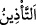
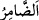

“İnsanlar arasında haccı” hacca dâveti ve onu emretmeyi “ilân et ki…” Yâni,
onların içinde nidâ et ey İbrahim! İnsanların ortasında seslen ve onları Allah’ın evini
haccetmeye davet et! el-Kâmûs’ta belirtildiği üzere “__WORD__, namaza çağırmaktır. el-
Müfredât’ta geçtiğine göre ise bir şeyi nidâ ile sesli olarak bildiren herkese müezzin
denir.
Rivâyet olunur ki İbrahim (a.s.) Kâbe’nin inşâsını bitirince, Allah Teâlâ ona:
“İnsanlar arasında haccı ilân et” buyurdu. İbrahim (a.s.): “Ya Rabbi! Sesim ulaşmaz ki.”
dedi. Allah Teâlâ: İlân etmek senden, ulaştırmak ise bana âid.” buyurdu. İbrahim (a.s.)
Safâ tepesine çıktı. Bir rivâyete göre Ebû Kubeys dağına, diğer bir rivâyete göre ise
makamın üzerine çıktı. Makam yükseldi, nihayet dağlar kadar yüksek oldu. İbrahim
(a.s.) iki parmağını kulaklarına soktu, yüzünü sağa sola, doğuya batıya çevirdi ve şöyle
seslendi:
“Ey insanlar, Rabbiniz bir ev yaptırdı ve bu Beytü’l-atîk’i haccı size farz kıldı.
Rabbinize icâbet edin ve Beyt-i Haram’ını haccedin ki onun sayesinde size karşılık
olarak cenneti bahşetsin ve ateşten/cehennemden âzâd etsin.”
Yer ve gök arasındakiler bu çağrıyı duydu. Hz. İbrahim’i duyan herkes
“Lebbeykallâhümme lebbeyk (Buyur Allah’ım emret, emrine hazırım.” demeye başladı.
İlk icabet eden Yemen ehli oldu. İnsanların en çok haccedeni onlardır. Onun için bir
hadiste şöyle buyrulmuştur: “Îman Yemen’e mensuptur.”[22] Üveys el-Karânî’nin
Yemen’den çıkmış olması, orası için şeref olarak yeter. Efendimiz (a.s.) “Ben
Rahmân’ın nefesini Yemen tarafından alıyorum.”[23] hadîsinde ona işâret vardır.
Mücâhid der ki: “Bir kere icâbet eden, bir kere hacceder. İki defa icâbet eden iki
defa, daha fazla icâbet eden o miktarda daha fazla hacceder.”
Es’iletü’l-hikem’de der ki: “İnsanlar ruhlar âleminde babalarının belinden ve
analarının karınlarından Hz. İbrahim’in dâvetine icâbet ettiler.”
“Ezzin fî’n-nâsi” genel bir çağrıdır
İnsanlar arasında gaflet uykusunda olan sen
Seçkinlik ve ayrıcalıklı olma dâvâsı gütmektesin
Herkes Ayaz gibi seçkin olamaz
Bu sebepten seçkinlerin gönlü, iki parça oldu:
Lebbeyk hâletinden biri ümid, diğeri korku
el-Hasâisu’s-suğrâ’da der ki: “Nebîlere ve rasullere farz kılınan şeyler, bu ümmete
de farz kılınmıştır. Bunlar abdest, cünüplükten kurtulmak için gusül, hac ve cihaddır.
Nebî hakkında vâcib olan bir şey, o şeyin peygambere mahsus olduğuna dâir sahih bir
delil yoksa ümmeti hakkında da vâcibdir.
“Gerek yaya olarak,” yâni ayakları ile yürüyerek “gerekse nice uzak yoldan gelen
yorgun argın” yâni uzak yolculuğun zayıf düşürdüğü arık “develer üzerinde.” Râğıb
der ki: “__WORD__ aslında zayıflık/arıklık anlamında değil, eti hafif kısrak için kullanılır.” “